Common name in Tamil : Pinchil, sangam, anjali
Common name in Telugu : Pisingi, pisung, takkolakamu
Common name in Singhalese : Wal gurenda
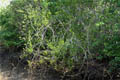
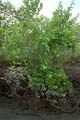
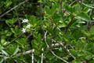
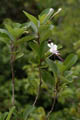
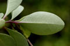
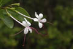
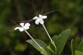
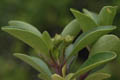
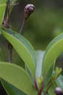
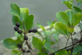
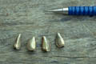
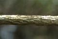
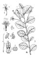
Diagnostic characters
Botany & morphology
Ecology
Distribution
Uses
Null
Null
Null
Scrambling shrub and much branched; bark pale brown. Leaves, small, ovoid. Flowers white in cymes.
Leaves simple, entire, opposite, elliptic or obovate, apex obtuse or rounded, base acute or cuneate, 1.5 - 4 x 1.5 – 2 cm, glabrous; petioles 0.6 to 1.5 cm.
Inflorescence axillary pedunculate 3 to 5 flowered cymes.
Flowers small, regular, bisexual; calyx cupular, 5 lobed, persistent often accrescent; corolla tube funnel-shaped, long and slender, lobes 5; stamens 4, filaments exerted, purplish-red, didynamous, anthers oblong; ovary 4-celled, style long and exerted, stigma bifid.
Fruits drupe, obovoid with 4-lobed separating in to 4 pyrenes.
Common along the sea coast. Dominates along the estuarine bank both in high and low salinity levels.
Indo-China. Throughout India and Sri Lanka at low elevation.
The juice of the leaves are used as a remedy to bring down fever. The plant also used as hedge plant.
Top of the page